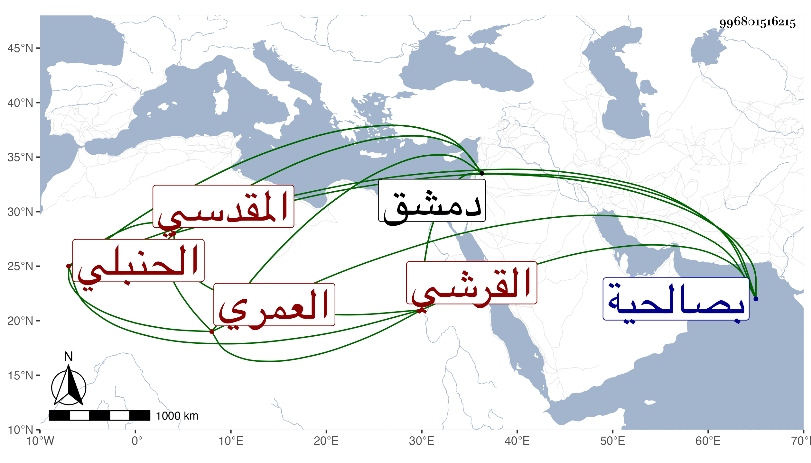

0902Sakhawi.DawLamic.ITO20230111-ara1.EIS1600.996801516215
Biography ID: 996801516215
أحمد بن أبي بكر بن عبد الرحمن بن محمد بن أحمد بن التقي سليمان بن حمزة بن أحمد بن عمر بن الشيخ أبي عمر العزابي الخير بن العماد بن الزين القرشي العمري المقدسي الحنبلي أخو ناصر الدين محمد وأخوته ويعرف كسلفه بابن زريق . ولد في سنة ثلاثين وثمانمائة بصالحية دمشق ونشأ بها فحفظ القرآن عند إسماعيل العجلوني وتجريد العناية لابن الحاج واشتغل في الفقه والعربية عند التقي بن قندس وأذن له بالإفتاء والإقراء وسمعه أخوه في سنة سبع وثلاثين فما بعدها على ابن ناصر الدين وابنة ابن الشرائحي وابن الطحان وآخرين وحدث باليسير ويذكر بالشجاعة والإقدام ونحو ذلك ولكنه سقط عن فرسه فعجز عن المشي إلا بعكازين . مات بدمشق في ليلة الثلاثاء ثامن ذي الحجة سنة إحدى وتسعين ودفن عند أقاربه . أرخه اللبودي .
